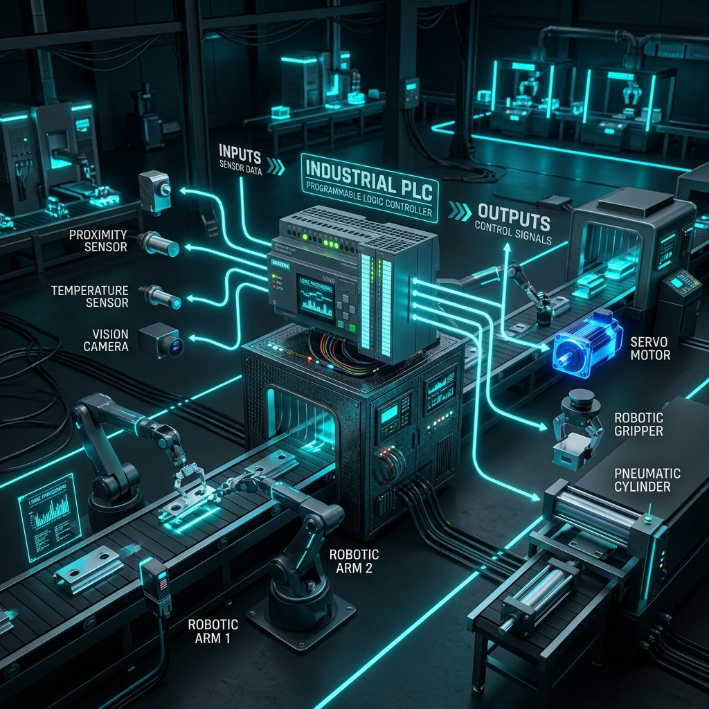

¿Qué es un PLC y Cómo Funciona? Explicación Sencilla y Detallada con Ejemplos Reales

Las búsquedas "qué es plc" y "qué es un plc" son dos de los conceptos más consultados en Coahuila por estudiantes, mecánicos, eléctricos y gerentes de producción. Aunque suena a un término técnico muy complejo, en realidad el concepto es bastante accesible si lo comparamos con elementos de la vida cotidiana.
En esta guía explicaremos detalladamente qué significa la sigla PLC, cuáles son sus componentes principales, cómo piensa paso a paso y por qué es indispensable en la industria moderna.
Definición: ¿Qué significan las siglas PLC?
PLC proviene del inglés Programmable Logic Controller, que en español se traduce como Controlador Lógico Programable.
Un PLC es esencialmente una computadora industrial ultra resistente, diseñada específicamente para trabajar en entornos hostiles de fábrica donde hay polvo, altas temperaturas, humedad, vibraciones e interferencia eléctrica. A diferencia de una computadora de escritorio (que se traba si le cae polvo o sufre un apagón), un PLC está construido para funcionar 24 horas al día, 365 días al año sin fallar.
🧠 La Analogía Perfecta: El PLC y el Cuerpo Humano
Para entender un PLC, piensa en tu propio cuerpo:
- Los Sensores (Entradas / Inputs): Son tus ojos, oídos y piel. Detectan si algo está caliente, si hay luz o si alguien tocó un botón. En la fábrica, son fotoceldas, sensores de temperatura o botones de paro.
- El Procesador / CPU (El Cerebro del PLC): Es tu cerebro. Recibe la información de tus ojos (entrada), evalúa la regla aprendida (si la estufa está caliente, quita la mano) y toma una decisión en milisegundos.
- Los Actuadores (Salidas / Outputs): Son tus músculos y manos. Reciben la orden del cerebro y ejecutan la acción (mover el brazo). En la fábrica, son motores, pistones neumáticos o luces de advertencia.
Las 3 Partes Principales de un PLC
- Módulo de Entradas (Inputs): Recibe las señales eléctricas de los dispositivos del campo (sensores, botones, termopares) y las convierte en datos digitales (unos y ceros) que el procesador entiende.
- Unidad Central de Procesamiento (CPU): Es la memoria y procesador donde vive el programa ejecutable. Analiza el estado de las entradas miles de veces por segundo y calcula qué debe hacer.
- Módulo de Salidas (Outputs): Envía voltajes (24VDC o 120VAC) para activar relevadores, electroválvulas neumáticas, luces piloto o arrancar variadores de frecuencia de motores.
¿Cómo funciona el Ciclo de Escaneo (Scan Cycle) de un PLC?
Un PLC trabaja ejecutando continuamente un bucle infinito llamado Ciclo de Escaneo que consta de 4 pasos rápidos:
Paso 1: Leer Entradas
El PLC fotografía el estado de todos los botones y sensores conectados.
Paso 2: Ejecutar la Lógica del Programa
Evalúa el programa (diagrama de escalera o renglones) de arriba a abajo y de izquierda a derecha.
Paso 3: Actualizar Salidas
Enciende o apaga físicamente los pistones, motores o válvulas según el resultado del programa.
Paso 4: Diagnóstico y Comunicaciones
Verifica que no haya fallas internas y envía datos a las pantallas HMI o computadoras centrales.
⚡ Aprende a Programar PLCs con Robologix Automation
¿Quieres dominar la programación de PLC desde cero o necesitas integrar una máquina en tu planta en Saltillo o Ramos Arizpe? En Robologix Automation somos expertos integradores y ofrecemos Cursos de PLC en Saltillo con constancia STPS DC-3.
¿Tienes dudas sobre PLC o deseas cotizar una capacitación?
Habla directamente con nuestro equipo de ingenieros en Saltillo.
WhatsApp Directo (+52 844 455 1869)